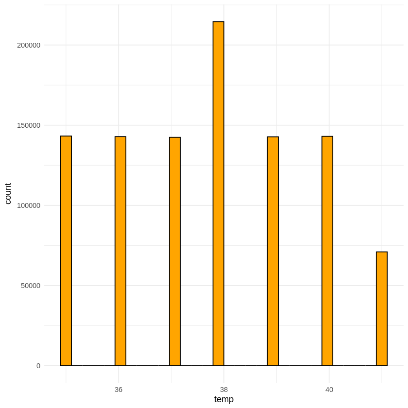
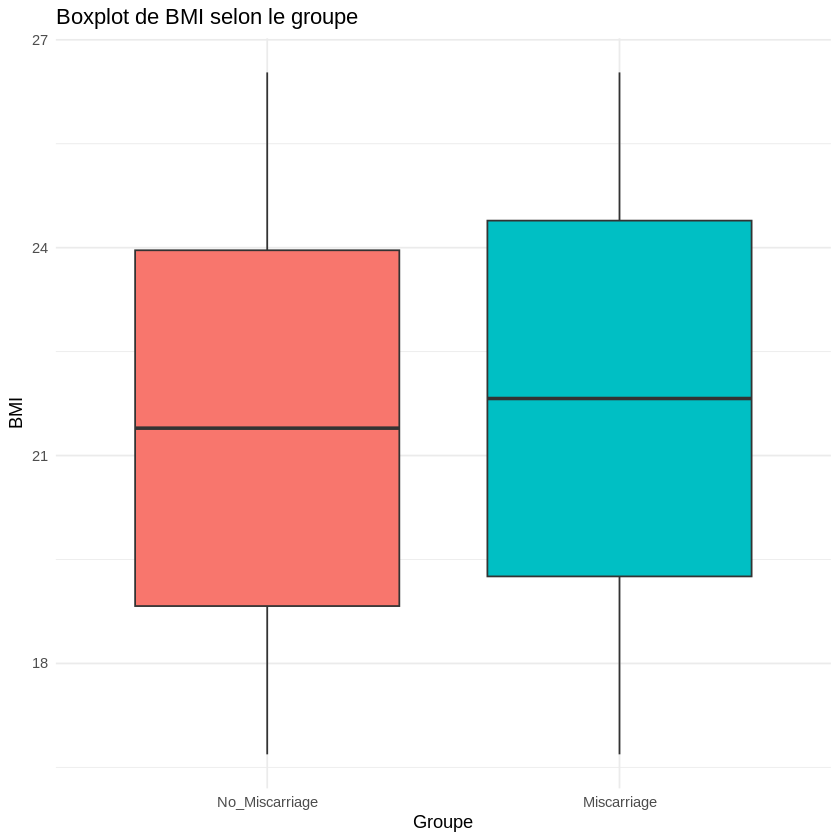
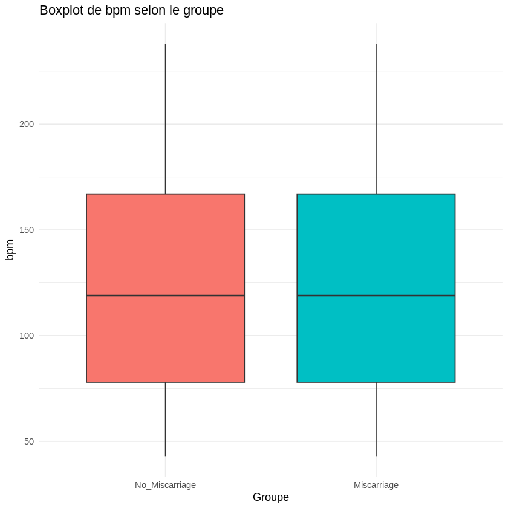

Ce projet s’appuie sur le dataset “HIBA ASRI – Miscarriage Prediction Risk Factors”, publié le 25 mai 2021 sur la plateforme Mendeley Data, et contribué par Hiba Asri. Ce jeu de données regroupe des informations médicales et comportementales collectées auprès de femmes enceintes, dans le but d’étudier les facteurs de risque associés aux fausses couches (miscarriages). Les données ont été obtenues à partir de plusieurs sources, notamment : • Capteurs de santé (IoT) permettant de mesurer des paramètres physiologiques tels que : o la fréquence cardiaque (Heart Rate), o le niveau de stress, o la température corporelle, o la tension artérielle. • Téléphones mobiles, utilisés pour collecter des informations liées au mode de vie et au contexte des patientes, comme : o l’activité physique (marche, vélo, conduite, position assise), o l’indice de masse corporelle (IMC), o la localisation, o les antécédents médicaux. ________________________________________ Objectif du projet L’objectif principal de ce projet est de prétraiter, nettoyer et analyser les données de manière approfondie, afin de mieux comprendre les relations entre les variables physiologiques, comportementales et les cas de fausse couche.
B. Import des Librairies
“Dans cette étape, nous chargeons les librairies essentielles pour manipuler, résumer et visualiser nos données. Elles nous permettent de faire des analyses statistiques rapides et de visualiser facilement les relations entre les variables.”
# Installer les packages (à faire une seule fois si pas déjà installés)install.packages("tidyverse")install.packages("skimr")install.packages("psych")install.packages("GGally")# Charger les packageslibrary(tidyverse) # dplyr, ggplot2, readr, etc.library(skimr) # résumé rapide du datasetlibrary(psych) # stats descriptiveslibrary(GGally) # ggpairs pour relations entre variables
C. Chargement du Dataset
# Lire le fichier CSV avec le bon séparateurdata_raw <-read.csv("/content/sample_data/Miscarriage_Prediction_dataset_New_HA.csv",sep =";",header =TRUE,stringsAsFactors =FALSE)
D. Exploration Initiale
“Nous commençons par explorer le dataset : afficher les premières lignes pour avoir un aperçu, vérifier ses dimensions et lister les noms des variables. Cela nous permet de comprendre la structure générale des données avant de les analyser en détail.”
# Aperçu des 6 premières ligneshead(data_raw)# Dimensions du dataset (lignes, colonnes)dim(data_raw)# Nom des variablesnames(data_raw)
A data.frame: 6 × 16
Age
BMI
Nmisc
Activity
Binking
Walking
Drinving
Sitting
Location
temp
bpm
stress
bp
Alcohol.Comsumption
Drunk
Miscarriage..No.Miscarriage
<int>
<chr>
<int>
<int>
<int>
<int>
<int>
<int>
<int>
<int>
<int>
<int>
<int>
<int>
<int>
<int>
1
22
16,68823896
0
1
0
0
1
1
2
38
103
0
2
449
0
0
2
22
16,68823896
0
1
0
0
1
1
1
36
103
0
2
276
2
0
3
22
16,68823896
2
1
0
0
1
1
3
38
103
0
2
534
2
0
4
22
16,68823896
0
1
0
1
0
1
2
39
102
1
2
230
2
0
5
22
16,68823896
1
1
0
1
0
1
3
35
102
1
2
364
2
0
6
22
16,68823896
0
1
1
0
0
0
0
35
102
1
2
211
2
0
1000000
16
'Age'
'BMI'
'Nmisc'
'Activity'
'Binking'
'Walking'
'Drinving'
'Sitting'
'Location'
'temp'
'bpm'
'stress'
'bp'
'Alcohol.Comsumption'
'Drunk'
'Miscarriage..No.Miscarriage'
Tableau de dictionnaire des variables :
Age : âge de la patiente (années), numérique. BMI : indice de masse corporelle, numérique. bpm : fréquence cardiaque, numérique. stress : niveau de stress (catégoriel). Activity, Biking, Walking, Driving, Sitting, Location : activité / contexte, catégorielles. etc.
E. Prétraitement des Types & Nettoyage
Dans une première phase de prétraitement, les types de variables ont été corrigés. La variable BMI, initialement stockée sous forme textuelle avec une virgule comme séparateur décimal, a été convertie en variable numérique. Les variables représentant des états ou catégories (activité, stress, localisation, issue de la grossesse) ont été transformées en facteurs afin de garantir une analyse statistique et graphique correcte. Ensuite, nous vérifions la structure du dataset pour confirmer que toutes les variables sont correctement typées.”
# Copier le dataset brut vers un dataset de travaildata <- data_raw# 1) Transformer BMI en numérique (remplacer la virgule par un point)data$BMI <-gsub(",", ".", data$BMI) # remplace , par .data$BMI <-as.numeric(data$BMI) # conversion en numérique# 2) Convertir certaines colonnes en factor (catégorielles)cols_factor <-c("Activity","Binking","Walking","Drinving","Sitting","Location","stress","Miscarriage..No.Miscarriage") # R remplace souvent "/" et espaces dans les noms# Vérifier les vrais noms des colonnes pour adapter si besoinnames(data)# Conversion en factor pour les colonnes qui existent vraimentfor (col in cols_factor) {if (col %in%names(data)) { data[[col]] <-as.factor(data[[col]]) }}# Vérifier les structuresstr(data)
“Nous réalisons un résumé statistique descriptif des variables. Cela nous permet d’observer les mesures centrales comme la moyenne et la médiane, la dispersion via les minimum et maximum, et la distribution des variables catégorielles. Par exemple, l’âge des patientes varie de 22 à 26 ans, le BMI de 16,7 à 26,5, et on note que 213 869 observations correspondent à des grossesses sans fausse couche et 153 496 à des fausses couches. Ces informations sont essentielles pour comprendre les tendances générales du dataset avant d’aller plus loin dans l’analyse.”
summary(data)
Age BMI Nmisc Activity Binking Walking
Min. :22 Min. :16.69 Min. :0.000 1:1000000 0:500686 0:501720
1st Qu.:25 1st Qu.:18.83 1st Qu.:1.000 1:499314 1:498280
Median :28 Median :21.40 Median :2.000
Mean :28 Mean :21.61 Mean :1.501
3rd Qu.:31 3rd Qu.:24.39 3rd Qu.:3.000
Max. :34 Max. :26.53 Max. :3.000
Drinving Sitting Location temp bpm stress
0:997594 0:499581 0:199395 Min. :35.00 Min. : 43.0 0:342140
1: 2406 1:500419 1:199818 1st Qu.:36.00 1st Qu.: 78.0 1:346710
2:200552 Median :38.00 Median :119.0 2: 81280
3:200154 Mean :37.78 Mean :128.9 3:229870
4:200081 3rd Qu.:39.00 3rd Qu.:167.0
Max. :41.00 Max. :238.0
bp Alcohol.Comsumption Drunk
Min. :0.000 Min. :100.0 Min. :0.000
1st Qu.:0.000 1st Qu.:288.0 1st Qu.:2.000
Median :2.000 Median :478.0 Median :2.000
Mean :1.525 Mean :477.6 Mean :1.888
3rd Qu.:2.000 3rd Qu.:667.0 3rd Qu.:2.000
Max. :3.000 Max. :855.0 Max. :2.000
Miscarriage..No.Miscarriage
0:500571
1:499429
“Nous renommons certaines variables pour simplifier leur lecture et éviter les caractères spéciaux. Par exemple, Alcohol.Comsumption devient Alcohol_Consumption et Miscarriage..No.Miscarriage devient Miscarriage. Cela facilite l’analyse et la visualisation des données.”
# Renommer quelques variables pour enlever les points multiplesdata <- data %>%rename(Alcohol_Consumption = Alcohol.Comsumption,Miscarriage = Miscarriage..No.Miscarriage )
“Nous convertissons la variable Drunk en catégorielle (factor) et vérifions les niveaux de toutes les variables catégorielles. Cela permet de s’assurer que chaque variable reflète correctement ses catégories et facilite l’analyse statistique et les visualisations ultérieures.”
# Drunk en factordata$Drunk <-factor(data$Drunk)# Vérifier les niveauxlevels(data$Drunk)levels(data$Activity)levels(data$Binking)levels(data$Walking)levels(data$Drinving)levels(data$Sitting)levels(data$Location)levels(data$stress)levels(data$Miscarriage)
'0'
'1'
'2'
'1'
'0'
'1'
'0'
'1'
'0'
'1'
'0'
'1'
'0'
'1'
'2'
'3'
'4'
'0'
'1'
'2'
'3'
'0'
'1'
names(data)
'Age'
'BMI'
'Nmisc'
'Activity'
'Binking'
'Walking'
'Drinving'
'Sitting'
'Location'
'temp'
'bpm'
'stress'
'bp'
'Alcohol_Consumption'
'Drunk'
'Miscarriage'
“Nous transformons les variables binaires en facteurs avec des étiquettes explicites. Par exemple, pour Binking, 0 devient No et 1 devient Yes. De même, la variable Miscarriage est renommée avec des labels compréhensibles : 0 devient No_Miscarriage et 1 devient Miscarriage. Cela rend les résultats et les visualisations plus lisibles et interprétables.”
# Exemple pour Binking (0 = ne pas faire du vélo, 1 = en vélo)data$Binking <-factor( data$Binking,levels =c("0", "1"),labels =c("No", "Yes"))data$Walking <-factor( data$Walking,levels =c("0", "1"),labels =c("No", "Yes"))data$Drinving <-factor( data$Drinving,levels =c("0", "1"),labels =c("No", "Yes"))data$Sitting <-factor( data$Sitting,levels =c("0", "1"),labels =c("No", "Yes"))data$Miscarriage <-factor( data$Miscarriage,levels =c("0", "1"),labels =c("No_Miscarriage", "Miscarriage"))
“La variable Activity présente un cas particulier : elle n’a qu’un seul niveau pour toutes les observations. Nous la conservons pour documentation, mais elle n’apportera pas d’information discriminante dans l’analyse.”
table(data$Activity)
1
1000000
F. Gestion des Duplicatas & NA
But : est-ce qu’il y a des valeurs manquantes ? des doublons ?
“Nous vérifions la présence de valeurs manquantes (NA) et de doublons dans le dataset. Aucune valeur manquante n’a été détectée, et seulement 74 lignes sont des duplicatas sur 367 365 observations. Cela confirme que les données sont globalement complètes et fiables pour l’analyse.”
# Nombre de valeurs manquantes par variablecolSums(is.na(data))# Proportion de NA par variablecolMeans(is.na(data))# Nombre de lignes dupliquéessum(duplicated(data))
Age
0
BMI
0
Nmisc
0
Activity
0
Binking
0
Walking
0
Drinving
0
Sitting
0
Location
0
temp
0
bpm
0
stress
0
bp
0
Alcohol_Consumption
0
Drunk
0
Miscarriage
0
Age
0
BMI
0
Nmisc
0
Activity
0
Binking
0
Walking
0
Drinving
0
Sitting
0
Location
0
temp
0
bpm
0
stress
0
bp
0
Alcohol_Consumption
0
Drunk
0
Miscarriage
0
74
sum(duplicated(data))
74
“Nous supprimons les lignes dupliquées afin de garantir l’unicité des observations. Après cette opération, aucun doublon n’est présent et le dataset contient désormais 999 926 lignes, prêt pour l’analyse exploratoire.”
# Suppression des doublonsdata <- data[!duplicated(data), ]# Vérification après suppressionsum(duplicated(data))nrow(data) # nombre de lignes après nettoyage
0
999926
#G. Analyse Exploratoire Globale
*“Nous réalisons une analyse exploratoire globale du dataset. La structure des données montre que nous avons 999 926 observations et 16 variables de types numériques et catégoriels.
Les statistiques descriptives révèlent :
l’âge des patientes varie de 22 à 34 ans avec une moyenne de 28 ans,
le BMI va de 16,7 à 26,5 avec une moyenne de 21,6,
les variables binaires comme Binking, Walking, Drinving et Sitting sont presque équilibrées entre leurs deux niveaux,
la variable cible Miscarriage est également équilibrée avec 500 530 grossesses sans fausse couche et 499 396 avec fausse couche.
Cette étape permet de comprendre la distribution générale des variables avant de procéder à des analyses plus détaillées et des visualisations.”*
Age BMI Nmisc Activity Binking
Min. :22 Min. :16.69 Min. :0.000 1:999926 No :500649
1st Qu.:25 1st Qu.:18.83 1st Qu.:1.000 Yes:499277
Median :28 Median :21.40 Median :2.000
Mean :28 Mean :21.61 Mean :1.501
3rd Qu.:31 3rd Qu.:24.39 3rd Qu.:3.000
Max. :34 Max. :26.53 Max. :3.000
Walking Drinving Sitting Location temp
No :501683 No :997520 No :499547 0:199380 Min. :35.00
Yes:498243 Yes: 2406 Yes:500379 1:199808 1st Qu.:36.00
2:200534 Median :38.00
3:200138 Mean :37.78
4:200066 3rd Qu.:39.00
Max. :41.00
bpm stress bp Alcohol_Consumption Drunk
Min. : 43.0 0:342102 Min. :0.000 Min. :100.0 0: 39267
1st Qu.: 78.0 1:346687 1st Qu.:0.000 1st Qu.:288.0 1: 33063
Median :119.0 2: 81276 Median :2.000 Median :478.0 2:927596
Mean :128.9 3:229861 Mean :1.524 Mean :477.6
3rd Qu.:167.0 3rd Qu.:2.000 3rd Qu.:667.0
Max. :238.0 Max. :3.000 Max. :855.0
Miscarriage
No_Miscarriage:500530
Miscarriage :499396
H. EDA Univariée - Variables Numériques
“Nous réalisons une analyse univariée des variables numériques en utilisant des histogrammes. Cela permet de visualiser la distribution des variables comme Age, BMI, bpm et temp. Ces graphiques montrent la fréquence des observations dans chaque intervalle et aident à identifier les tendances générales, les valeurs extrêmes ou les anomalies.”
library(ggplot2)ggplot(data, aes(x = Age)) +geom_histogram(bins =30, fill ="skyblue", color ="black") +theme_minimal()ggplot(data, aes(x = BMI)) +geom_histogram(bins =30, fill ="salmon", color ="black") +theme_minimal()ggplot(data, aes(x = bpm)) +geom_histogram(bins =30, fill ="lightgreen", color ="black") +theme_minimal()ggplot(data, aes(x = temp)) +geom_histogram(bins =30, fill ="orange", color ="black") +theme_minimal()

Analyse descriptive comparative entre les groupes (Miscarriage vs No_Miscarriage): “Nous réalisons une analyse descriptive comparative entre les deux groupes : Miscarriage et No_Miscarriage, pour les variables numériques Age, BMI, bpm et temp. Nous calculons la moyenne, l’écart-type et la médiane pour chaque groupe.”
Résultats :
Age : les patientes avec fausse couche ont une moyenne légèrement plus élevée (28,93 ans) que celles sans fausse couche (27,08 ans), ce qui pourrait suggérer un effet de l’âge sur le risque.
BMI : les moyennes sont très proches, environ 21,6, indiquant peu de différence entre les deux groupes.
bpm (battements par minute) : similaire entre les groupes, avec une moyenne autour de 128,9 bpm, suggérant peu de variation liée au risque de fausse couche.
temp (température) : pratiquement identique entre les groupes, avec une moyenne d’environ 37,78°C, indiquant que la température corporelle n’est pas discriminante ici.
“Cette analyse permet de comparer les tendances centrales des variables quantitatives entre les groupes et de repérer rapidement celles qui pourraient être liées au risque de fausse couche.”
# Moyennes / médianes par groupe pour les variables quantitativesaggregate(cbind(Age, BMI, bpm, temp) ~ Miscarriage, data = data,FUN =function(x) c(mean =mean(x), sd =sd(x), median =median(x)))
A data.frame: 2 × 5
Miscarriage
Age
BMI
bpm
temp
<fct>
<dbl[,3]>
<dbl[,3]>
<dbl[,3]>
<dbl[,3]>
No_Miscarriage
27.07925, 3.789439, 27
21.60042, 2.964625, 21.39518
128.9279, 57.69639, 119
37.78590, 1.819446, 38
Miscarriage
28.92870, 3.454456, 29
21.61242, 2.959030, 21.82308
128.8895, 57.73553, 119
37.78199, 1.819556, 38
*“Nous passons maintenant à des histogrammes comparatifs par groupe, en visualisant la distribution des variables numériques Age, BMI, bpm et temp selon le statut Miscarriage ou No_Miscarriage.
L’utilisation de couleurs différentes et d’une transparence (alpha) permet de superposer les distributions et d’identifier visuellement les différences entre les deux groupes. Par exemple, on remarque que les patientes avec fausse couche ont tendance à être légèrement plus âgées, tandis que pour le BMI, bpm et la température, les distributions sont très similaires entre les groupes.”*
Les patientes sans fausse couche (No_Miscarriage) sont principalement concentrées entre 24 et 27 ans.
Les patientes avec fausse couche (Miscarriage) montrent une légère tendance vers des âges plus élevés, surtout autour de 28 à 32 ans.
Les distributions se superposent partiellement, indiquant que l’âge pourrait avoir une influence modeste sur le risque de fausse couche, mais il existe un chevauchement important entre les groupes.”*
Boxplots variable par variable ⁉*“Nous réalisons maintenant des boxplots pour comparer la distribution des variables numériques (Age, BMI, bpm et temp) entre les groupes Miscarriage et No_Miscarriage.
Ces graphiques permettent de visualiser la médiane, les quartiles et les valeurs extrêmes pour chaque groupe. Par exemple, le boxplot pour l’âge montre que les patientes avec fausse couche ont tendance à être légèrement plus âgées, tandis que pour BMI, bpm et température, les distributions sont très similaires entre les groupes, ce qui confirme les observations faites avec les histogrammes.”*
library(ggplot2)# Fonction pratique pour éviter de répéter le codeplot_box <-function(var_name, y_label) {ggplot(data, aes(x = Miscarriage, y = .data[[var_name]], fill = Miscarriage)) +geom_boxplot() +labs(title =paste("Boxplot de", y_label, "selon le groupe"),x ="Groupe",y = y_label ) +theme_minimal() +theme(legend.position ="none")}plot_box("Age", "Âge")plot_box("BMI", "BMI")plot_box("bpm", "bpm")plot_box("temp", "Température")


statistique + histogramme + densité + boxplot: Analyse descriptive des variables Age, BMI et bpm
1.Résumé statistique
Age : moyenne ≈ 28 ans, écart-type ≈ 3,7, médiane = 28 → distribution centrée autour de la moyenne.
bpm (battements par minute) : moyenne ≈ 128,9, écart-type ≈ 57,7, médiane ≈ 119 → forte variabilité et distribution possiblement asymétrique.
2.Visualisation
Histogramme + densité pour le BMI : Montre que la majorité des individus sont autour de 21-22 avec une forme légèrement asymétrique.
Boxplot pour le BMI : Permet d’identifier facilement les valeurs extrêmes et la dispersion des données.
3.Observations
Le BMI est relativement stable avec quelques valeurs extrêmes visibles sur le boxplot.
La variable bpm présente une grande variabilité, indiquant des différences importantes entre individus.
Les distributions peuvent présenter de légères asymétries (skewness) et kurtosis différentes, ce qui peut influencer certaines analyses statistiques.
library(psych)describe(data[, c("Age", "BMI", "bpm")])# Histogramme + densitéggplot(data, aes(x = BMI)) +geom_histogram(bins =30, fill ="steelblue", color ="white") +geom_density(color ="red") +labs(title ="Distribution du BMI", x ="BMI", y ="Fréquence")# Boxplot simpleggplot(data, aes(y = BMI)) +geom_boxplot(fill ="orange") +labs(title ="Boxplot du BMI")
A psych: 3 × 13
vars
n
mean
sd
median
trimmed
mad
min
max
range
skew
kurtosis
se
<int>
<dbl>
<dbl>
<dbl>
<dbl>
<dbl>
<dbl>
<dbl>
<dbl>
<dbl>
<dbl>
<dbl>
<dbl>
Age
1
999926
28.00293
3.742064
28.00000
28.00280
4.447800
22.00000
34.00000
12.000000
0.0002753510
-1.2135627
0.003742202
BMI
2
999926
21.60641
2.961837
21.39518
21.60639
3.806459
16.68824
26.53002
9.841782
0.0006127338
-1.2042138
0.002961946
bpm
3
999926
128.90872
57.715916
119.00000
125.90949
63.751800
43.00000
238.00000
195.000000
0.4439352811
-0.9501861
0.057718052
Tests statistiques entre les groupes: Test t pour comparer l’Age entre les groupes
1.Objectif : Comparer la moyenne d’Age entre les deux groupes :
No_Miscarriage
Miscarriage
2.Test utilisé :
Welch Two Sample t-test (version du t-test qui ne suppose pas que les variances des deux groupes soient égales).
3.Résultats :
t = -255.04, df ≈ 991884, p-value < 2.2e-16
Intervalle de confiance à 95% pour la différence de moyennes : [-1.86, -1.83]
Moyennes des groupes :
No_Miscarriage : 27,08
Miscarriage : 28,93
4.Interprétation :
La p-value est extrêmement petite (< 0,05), donc on rejette l’hypothèse nulle (les moyennes sont égales).
Il y a donc une différence significative d’âge entre les femmes ayant eu une fausse couche et celles n’en ayant pas eu.
En moyenne, les femmes ayant fait une fausse couche sont plus âgées d’environ 1,85 an.
# Exemple t-test pour Aget.test(Age ~ Miscarriage, data = data)
Welch Two Sample t-test
data: Age by Miscarriage
t = -255.04, df = 991884, p-value < 2.2e-16
alternative hypothesis: true difference in means between group No_Miscarriage and group Miscarriage is not equal to 0
95 percent confidence interval:
-1.863667 -1.835241
sample estimates:
mean in group No_Miscarriage mean in group Miscarriage
27.07925 28.92870
Observations :
Age : Les femmes ayant eu une fausse couche sont en moyenne plus âgées que celles n’en ayant pas eu (≈ 1,85 an de différence).
BMI : Très similaire entre les groupes, peu de différence.
bpm : Moyenne très proche entre les deux groupes, forte variabilité dans les deux cas (écart-type ≈ 57).
Conclusion :
L’âge semble être un facteur différenciant entre les groupes.
Le BMI et le bpm ne montrent pas de différences significatives à première vue.
# Stat descriptives par groupe pour quelques variableslibrary(dplyr)data %>%group_by(Miscarriage) %>%summarise(Age_mean =mean(Age),Age_sd =sd(Age),BMI_mean =mean(BMI),BMI_sd =sd(BMI),bpm_mean =mean(bpm),bpm_sd =sd(bpm) )
A tibble: 2 × 7
Miscarriage
Age_mean
Age_sd
BMI_mean
BMI_sd
bpm_mean
bpm_sd
<fct>
<dbl>
<dbl>
<dbl>
<dbl>
<dbl>
<dbl>
No_Miscarriage
27.07925
3.789439
21.60042
2.964625
128.9279
57.69639
Miscarriage
28.92870
3.454456
21.61242
2.959030
128.8895
57.73553
I. EDA Univariée - Variables Catégorielles
Interprétation :
Les proportions de stress sont très similaires entre les deux groupes.
Les niveaux les plus fréquents sont 0 et 1, tandis que le niveau 2 est peu représenté.
Le niveau 3 est un peu plus présent dans le groupe Miscarriage, mais la différence est faible.
Visualisation – Barplot proportionnel
Le barplot avec position = “fill” montre les proportions relatives de chaque niveau de stress par groupe.
L’axe des y est en pourcentage pour faciliter la comparaison.
La couleur distingue les groupes Miscarriage et No_Miscarriage.
Conclusion :
À première vue, la variable stress ne semble pas fortement différencier les femmes selon qu’elles ont eu une fausse couche ou non.
Pour aller plus loin, on pourrait réaliser un test du Chi² pour vérifier statistiquement l’association entre stress et Miscarriage.
# Tableau croisétable_stress <-table(data$stress, data$Miscarriage)prop.table(table_stress, margin =2) # pourcentages par colonne (par groupe)# Barplot avec ggplot2ggplot(data, aes(x = stress, fill = Miscarriage)) +geom_bar(position ="fill") +# proportionsscale_y_continuous(labels = scales::percent) +theme_minimal()